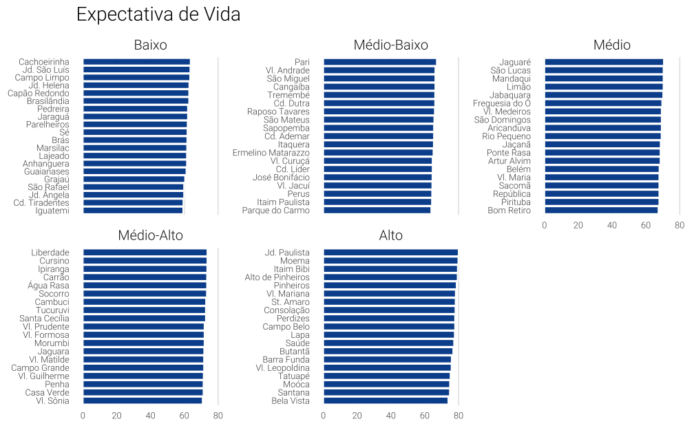
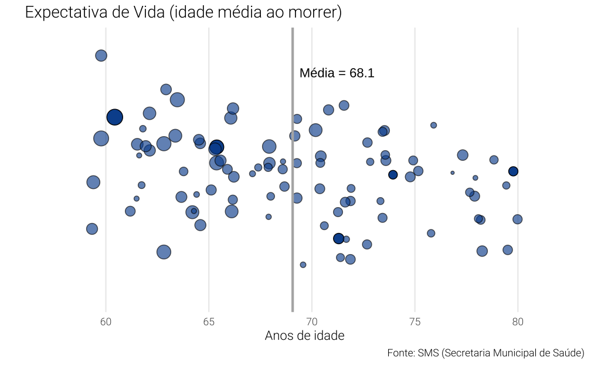

library(ggplot2)
library(dplyr)
library(stringr)
library(forcats)
library(readxl)
library(janitor)
library(classInt)
library(ggrepel)
library(showtext)
library(sf)Há algum tempo atrás tive o seguinte problema: como visualizar várias observações de uma única variável numérica num gráfico? Tentei algumas soluções óbvias, mas nenhuma pareceu funcionar muito bem. Neste post junto algumas das minhas tentativas.
Os dados provêm do Mapa da Desigualdade 2019. Neste site pode-se baixar todos os dados além de baixar o relatório completo que apresenta informações socioeconômicas atualizadas para todos os distritos de São Paulo, compilando e sistematizando dados de diversas fontes públicas.
Pacotes, tema e dados.
# Importa a fonte Roboto Light
sysfonts::font_add_google("Roboto", family = "Roboto Light", regular.wt = 300)
showtext::showtext_auto()
# Um tema básico para os gráficos
theme_vini <- theme_minimal() +
theme(
text = element_text(family = "Roboto Light"),
plot.title = element_text(family = "Roboto Light", size = 14),
panel.grid.minor = element_blank(),
legend.position = "none"
)O código abaixo mostra como importei e limpei os dados.
Code
# Importa os dados do arquivo xlsx
df <- readxl::read_excel(
here::here("posts", "general-posts", "repost-mapa-desigualdade", "tabela.xlsx"),
sheet = 3
)
# Arruma o nome das colunas
df <- janitor::clean_names(df)
# Alguns bairros para destacar nos graficos
sel_bairro <- c("Grajaú", "Penha", "Sapopemba", "Bela Vista", "Moema")
# Função para converter os numeros
as_numeric_string <- function(x) {
stopifnot(is.character(x))
x <- stringr::str_remove_all(x, "\\.")
x <- stringr::str_replace(x, ",", ".")
return(as.numeric(x))
}
# Função para abreviar o nome dos distritos
pat <- c("Vila", "Jardim", "Cidade", "Santo")
pat <- paste(pat, collapse = "|")
str_shorten <- function(x) {
vl <- c(
"Vila" = "Vl.", "Jardim" = "Jd.", "Cidade" = "Cd.", "Santo" = "St.",
"Santa" = "St."
)
return(unname(vl[x]))
}
# Limpa os dados
df <- df %>%
# Renomeia a coluna de idade_media_ao_morrer
rename(expec_vida = idade_media_ao_morrer) %>%
# Seleciona apenas as colunas de interesse
select(id_regiao, distrito, expec_vida, populacao_total) %>%
mutate(
# Encurta o nome dos distritos
label_distrito = stringr::str_replace_all(distrito, pat, str_shorten),
# Converte as colunas numéricas
expec_vida = as_numeric_string(expec_vida),
populacao_total = as_numeric_string(populacao_total),
# Variável dummy para indicar os bairros destacados
highlight = factor(if_else(distrito %in% sel_bairro, 1L, 0L))
) %>%
na.omit()
# Tabela auxiliar somente com os valores médios do municíoio
df_media <- filter(df, distrito == "Município SP")
# Tabela auxiliar somente com os municipios destacados
df_aux_label <- filter(df, highlight == 1)
# Remove a média da tabela
df <- filter(df, distrito != "Município SP")Expectativa de vida por distrito de São Paulo
Há mais de 90 distritos em São Paulo e temos estimativas da expectativa de vida média em cada um deles. O expec_vida mais alto foi de 80,57 anos, registrado no distrito de Moema, cifra próxima a de países como Dinamarca e Liechtenstein. Como referência, a expectativa de vida média em São Paulo é de 68,7.
| Distrito | Expectativa de Vida |
|---|---|
| Jardim Paulista | 80.0 |
| Moema | 79.8 |
| Itaim Bibi | 79.5 |
| Alto de Pinheiros | 79.4 |
| Pinheiros | 78.8 |
| Vila Mariana | 78.3 |
| Santo Amaro | 78.2 |
| Consolação | 78.1 |
| Perdizes | 77.9 |
| Campo Belo | 77.9 |
Do outro lado temos expec_vidaes significativamente mais baixos, registrados em alguns dos distritos de menor renda de São Paulo como Cidade Tiradentes e Marsilac. A diferença na expectativa de vida entre os distritos chega a mais de 20 anos.
| Distrito | Expectativa de Vida |
|---|---|
| Iguatemi | 59.3 |
| Cidade Tiradentes | 59.4 |
| Jardim Ângela | 59.8 |
| São Rafael | 59.8 |
| Grajaú | 60.4 |
| Guaianases | 61.2 |
| Lajeado | 61.5 |
| Anhanguera | 61.5 |
| Marsilac | 61.6 |
| Brás | 61.7 |
O objetivo aqui é de enxergar mais claramente estas diferenças. Como é a expectativa de vida nos diferentes distritos de São Paulo?
Histograma
Uma solução bastante clássica seria de fazer um histograma. Neste tipo de gráfico a dispersão fica clara, mas pode ser difícil de dar destaque para distritos específicos. O histograma conta a frequência de observações dentro de janelas de tamanho fixo. A princípio, a única dificuldade em usar o histograma está em definir a amplitude de cada um destes intervalos, mas, na prática, este problema não costuma ser muito complexo.
Ainda que o gráfico seja comumente usado, ele não é tão popular, sendo raramente visto em publicações de jornal, por exemplo.
Code
ggplot(df, aes(x = expec_vida)) +
geom_histogram(bins = 11, colour = "white", fill = "#08519c") +
geom_hline(yintercept = 0) +
geom_text(
data = df_aux_label,
aes(x = expec_vida,
y = c(15, 17, 19, 16, 12),
label = stringr::str_wrap(label_distrito, 5)),
colour = "gray25",
family = "Roboto Light",
size = 4
) +
geom_segment(
data = df_aux_label,
aes(x = expec_vida,
xend = expec_vida,
y = 0,
yend = c(15, 17, 19, 15, 12) - 0.5),
colour = "gray70"
) +
scale_y_continuous(breaks = seq(0, 20, 4)) +
scale_x_continuous(limits = c(min(df$expec_vida) - 2, max(df$expec_vida) + 2)) +
labs(
title = "Expectativa de Vida",
x = "Anos de idade",
y = "",
caption = "Fonte: SMS (Secretaria Municipal de Saúde)",
subtitle = "Idade média ao morrer em 2022."
) +
theme_vini +
theme(panel.grid.major.x = element_blank())Gráfico de colunas
Um simples gráfico de colunas também poderia ser uma alternativa. Neste caso, como há muitas observações (distritos) diferentes, o gráfico acaba sobrecarregado e confuso.
Code
ordered_df <- df %>%
mutate(
label_distrito = factor(label_distrito),
label_distrito = forcats::fct_reorder(label_distrito, expec_vida)
)
ggplot(ordered_df, aes(x = label_distrito, y = expec_vida)) +
geom_col(colour = "white", fill = "#08519c") +
coord_flip() +
scale_y_continuous(expand = c(0, 0)) +
labs(
title = "Expectativa de Vida",
x = "Anos de idade",
y = "",
caption = "Fonte: SMS (Secretaria Municipal de Saúde)",
subtitle = "Idade média ao morrer em 2022."
) +
theme_vini +
theme(
text = element_text(size = 6),
axis.text.x = element_text(angle = 90, hjust = 1),
panel.grid.major.y = element_blank()
)Outra saída seria dividir os dados em grupos menores (e.g. alta, média-alta, média-baixa, baixa) e usar a função facet_wrap. O lado negativo disto, além de tornar o código mais complexo, é de acrescentar divisões nos dados que eventualmente são muito artificiais.
Aqui eu faço um divisão por quintil e crio uma denominação um tanto arbitrária para permitir a leitura dos dados.
Code
xl <- c("Baixo", "Médio-Baixo", "Médio", "Médio-Alto", "Alto")
quintile_df <- ordered_df %>%
mutate(
life_group = ntile(expec_vida, 5),
life_group = factor(life_group, labels = xl)
)
ggplot(quintile_df, aes(x = label_distrito, y = expec_vida)) +
geom_col(colour = "white", fill = "#08519c") +
coord_flip() +
facet_wrap(vars(life_group), scales = "free_y") +
labs(x = NULL, y = NULL, title = "Expectativa de Vida") +
theme_vini +
theme(
text = element_text(size = 8),
strip.text = element_text(size = 10),
panel.grid.major.y = element_blank()
)
Lolipop
Este tipo de gráfico vem ganhando espaço mesmo em veículos de mídia populares por ser bastante simples. Ele é mais comumente usado para mostrar a evolução de uma variável em dois momentos do tempo, mas também pode-se usá-lo analogamente a um gráfico de colunas.
Infelizmente, neste exemplo, ele vai sofrer do mesmo problema que o gráfico de colunas. A título de exemplo faço um gráfico deste estilo apenas para os distritos com as maiores e menores expectativas de vida.
Code
# Ordena a base de dados pela expectativa de vida
ordered_df <- arrange(ordered_df, expec_vida)
# Cria uma tabela com as primeiras 5 e últimas 5 linhas
top_df <- rbind(head(ordered_df, 5), tail(ordered_df, 5))
ggplot(top_df, aes(x = label_distrito, y = expec_vida)) +
geom_segment(aes(xend = label_distrito, yend = 55)) +
geom_point(colour = "black", fill = "#08519c", size = 4, shape = 21) +
coord_flip() +
labs(
y = "Anos de vida",
x = NULL,
title = "Expectativa de vida",
subtitle = "Idade média ao morrer em 2022. Dados apenas dos distritos\ncom maiores e menores expectativas de vida.",
caption = "Fonte: SMS (Secretaria Municipal de Saúde)"
) +
theme_vini +
theme(panel.grid.major.y = element_blank())Gráfico de dispersão
Gráficos de dispersão apresentam a relação entre duas variáveis. Neste caso, podemos fazer alguns truques para inventar uma variável falsa que serve somente para que o R faça o gráfico.
Uma alternativa seria impor um expec_vida constante e arbitrário para uma das variáveis. Neste caso escolho x = 1 e escondo o eixo. No gráfico abaixo, cada distrito é um ponto sobre uma mesma linha. Para amenizar a sobreposição de observações uso alpha = 0.5 que acrescenta um pouco de transparência nas observações.
Code
df_aux <- tibble(
x = 1.025,
y = df_media$expec_vida,
label = paste0("Média = ", round(y, 1))
)
ggplot(df, aes(x = 1, y = expec_vida)) +
geom_vline(xintercept = 1, colour = "gray60", alpha = 0.5) +
geom_point(
aes(colour = highlight, alpha = highlight, size = populacao_total),
shape = 21,
fill = "#08519c",
) +
geom_text(
data = df_aux_label,
aes(x = c(0.95, 0.95, 1.05, 1.05, 1.05), y = expec_vida, label = label_distrito),
family = "Roboto Light",
size = 4
) +
geom_segment(
data = df_aux_label,
colour = "gray25",
aes(
x = 1, xend = c(0.955, 0.955, 1.045, 1.045, 1.045),
y = expec_vida, yend = expec_vida
)
) +
geom_segment(
data = tibble(x = 1, xend = 1.02, y = df_media$expec_vida, yend = y),
aes(x = x, y = y, xend = xend, yend = yend),
colour = "gray25",
) +
geom_text(
data = df_aux,
aes(x = x, y = y, label = label),
family = "Roboto Light",
size = 3
) +
coord_flip() +
scale_x_continuous(limits = c(0.94, 1.06)) +
scale_y_continuous(limits = c(min(df$expec_vida) - 2, max(df$expec_vida) + 2)) +
scale_alpha_manual(values = c(0.45, 0.8)) +
scale_size_continuous(range = c(1, 7.5)) +
scale_colour_manual(values = c("#08519c", "black")) +
labs(
title = "Expectativa de Vida",
x = "",
y = "Anos de idade",
caption = "Fonte: SMS (Secretaria Municipal de Saúde)",
subtitle = "Idade média ao morrer em 2022. Cada ponto representa um distrito de São Paulo."
) +
theme_vini +
theme(
axis.ticks.y = element_blank(),
axis.text.y = element_blank(),
panel.grid.major.y = element_blank()
)Uma solucão alternativa seria criar uma variável aleatória qualquer para servir como a variável “falsa”. Estranhamente, cria-se uma sensação melhor de dispersão e não há mais o problema de sobreposição. Contudo, o gráfico pode ser bastante confuso, pois dá a entender que estamos vendo a relação entre duas variáveis distintas, quando uma delas, na verdade, não representa coisa alguma.
Ainda assim, ideias similares foram implementadas pelo portal Nexo nesta postagem.
Code
# Cria uma variável aleatória qualquer seguindo uma Gaussiana
df <- df %>% mutate(x = rnorm(nrow(.)))
# Para destacar o expec_vida médio
df_aux <- tibble(
x = 2.25,
y = df_media$expec_vida + 0.75,
label = paste("Média =", round(y - 0.75, 1))
)
df_aux_label <- df %>%
mutate(label_distrito = if_else(highlight == 1L, label_distrito, ""))
ggplot(df, aes(x = x, y = expec_vida)) +
geom_jitter(aes(alpha = highlight, size = populacao_total),
shape = 21,
fill = "#08519c"
) +
ggrepel::geom_text_repel(
data = df_aux_label,
aes(label = label_distrito),
force = 5,
family = "Roboto Light",
size = 3
) +
geom_text(
data = df_aux,
aes(x = x, y = y, label = label),
hjust = -0.15
) +
geom_hline(aes(yintercept = mean(expec_vida)), colour = "gray70", size = 1) +
coord_flip() +
scale_alpha_manual(values = c(0.65, 1)) +
scale_y_continuous(limits = c(min(df$expec_vida) - 2, max(df$expec_vida) + 2)) +
scale_x_continuous(limits = c(-3, 3)) +
labs(
title = "Expectativa de Vida (idade média ao morrer)",
x = "",
y = "Anos de idade",
caption = "Fonte: SMS (Secretaria Municipal de Saúde)"
) +
guides(colour = FALSE, alpha = FALSE) +
theme_vini +
theme(
axis.text.y = element_blank(),
panel.grid.major.y = element_blank()
)
Mapa
Deixei a visualização mais óbvia para o final. Como a variável está distribuída espacialmente, pode-se fazer um simples mapa de São Paulo separado por distritos.
Aqui, eu uso o shapefile de distritos da Pesquisa Origem e Destino. Apesar de não haver um identificador comum entre as bases, foi relativamente simples fazer o join compatibilizando o nome dos distritos.
Code
# Importa o shapefile
distritos <- st_read(
here::here("posts", "general-posts", "repost-mapa-desigualdade", "districts.gpkg"),
quiet = TRUE
)
distritos <- distritos %>%
# Filtra apenas distritos de SP (capital)
filter(code_district <= 96) %>%
# Renomeia a coluna para facilitar o join
rename(distrito = name_district)
# Verifica se ha distritos com nome diferente (Mooca)
anti <- anti_join(select(df, distrito), distritos, by = "distrito")
# Altera a grafia para garantir o join
df <- df %>%
mutate(
distrito = if_else(distrito == "Moóca", "Mooca", distrito)
)
# Junta os dados no sf
distritos <- left_join(distritos, df, by = "distrito")O gráfico abaixo mostra a expectativa de vida em cada distrito na cidade.
Code
ggplot(distritos) +
geom_sf(aes(fill = expec_vida), linewidth = 0.1) +
scale_fill_viridis_c(name = "Expectativa\nde Vida") +
ggtitle("Expectativa de Vida por Distrito") +
theme_void() +
theme(
legend.title = element_text(hjust = 0.5, size = 10),
legend.position = c(0.8, 0.3)
)Outra maneira de apresentar este dado é agrupando-o de alguma forma. Eu sou particularmente parcial ao algoritmo de Jenks.
Code
# Encontra os intervalos de cada grupo
breaks <- classInt::classIntervals(distritos$expec_vida, n = 7, style = "jenks")
# Classifica os valores em grupos
distritos <- distritos %>%
mutate(
jenks_group = cut(expec_vida, breaks = breaks$brks, include.lowest = TRUE)
)
ggplot(distritos, aes(fill = jenks_group)) +
geom_sf(linewidth = 0.1, color = "gray80") +
scale_fill_brewer(palette = "BrBG", name = "Expectativa\nde Vida") +
ggtitle("Expectativa de Vida por Distrito") +
theme_void() +
theme(
legend.title = element_text(hjust = 0.5, size = 10),
legend.position = c(0.8, 0.3)
)